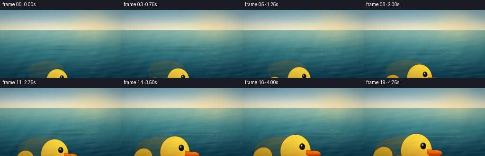
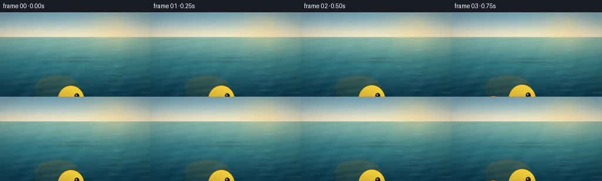
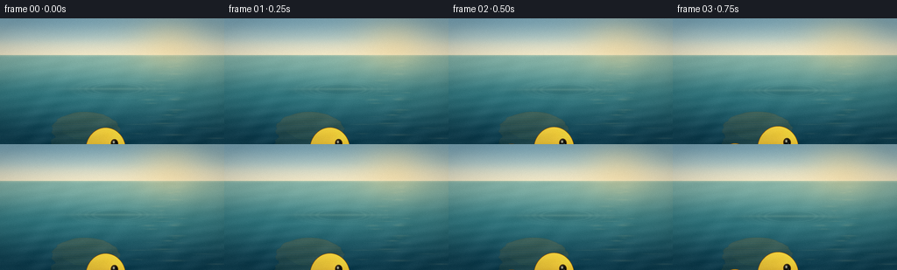

CODING AGENTS AS PIXEL WORLD MODELS
traex/DeepSeek-V4.1-Flash · phygen_065
点击播放 · 原生 RGB 像素
逐轮保存的候选
回放视频、检查图与代码变化。
每份候选均可单独播放。实际图片检查记录在下方工具轨迹中。
候选 01播放与检查图
点击播放 · 原生 RGB 像素

展开代码变化
--- 上一保存版本
+++ 本次保存版本
@@ -0,0 +1,455 @@
+from pathlib import Path
+
+import cv2
+import numpy as np
+from PIL import Image, ImageDraw, ImageFilter
+
+import artifact_io
+
+
+ROOT = Path(__file__).resolve().parent
+W, H = 256, 144
+SS = 4
+IW, IH = W * SS, H * SS
+N_FRAMES = 20
+FPS = 4.0
+HORIZON = 42.0 * SS
+
+
+def lerp(a, b, t):
+ return a + (b - a) * t
+
+
+def smoothstep(t):
+ t = np.clip(t, 0.0, 1.0)
+ return t * t * (3.0 - 2.0 * t)
+
+
+def color_lerp(a, b, t):
+ a = np.asarray(a, dtype=np.float32)
+ b = np.asarray(b, dtype=np.float32)
+ return a + (b - a) * t[..., None]
+
+
+def alpha_over(base, layer):
+ base_rgb = base[..., :3]
+ base_a = base[..., 3:4]
+ src_rgb = layer[..., :3]
+ src_a = layer[..., 3:4]
+ out_a = src_a + base_a * (1.0 - src_a)
+ out_rgb = (src_rgb * src_a + base_rgb * base_a * (1.0 - src_a)) / np.maximum(out_a, 1e-6)
+ return np.concatenate((out_rgb, out_a), axis=2)
+
+
+def make_background():
+ yy, xx = np.mgrid[0:IH, 0:IW].astype(np.float32)
+ xd, yd = xx / SS, yy / SS
+ sky_t = np.clip(yd / 42.0, 0.0, 1.0)
+ sky_top = np.array([0.49, 0.66, 0.73], dtype=np.float32)
+ sky_mid = np.array([0.73, 0.81, 0.79], dtype=np.float32)
+ sky_low = np.array([0.92, 0.89, 0.78], dtype=np.float32)
+ lower = color_lerp(sky_mid, sky_low, smoothstep(np.clip((sky_t - 0.42) / 0.58, 0.0, 1.0)))
+ sky = color_lerp(sky_top, lower, smoothstep(sky_t * 1.35))
+
+ water_t = np.clip((yd - 42.0) / (144.0 - 42.0), 0.0, 1.0)
+ water_far = np.array([0.50, 0.68, 0.64], dtype=np.float32)
+ water_mid = np.array([0.20, 0.47, 0.50], dtype=np.float32)
+ water_near = np.array([0.065, 0.25, 0.32], dtype=np.float32)
+ first = color_lerp(water_far, water_mid, smoothstep(np.clip(water_t / 0.48, 0.0, 1.0)))
+ water = color_lerp(first, water_near, smoothstep(np.clip((water_t - 0.35) / 0.65, 0.0, 1.0)))
+
+ img = np.where((yy < HORIZON)[..., None], sky, water)
+
+ # Low, warm sun behind a little atmospheric haze.
+ sun_dx, sun_dy = (xd - 194.0) / 28.0, (yd - 29.0) / 20.0
+ sun_glow = np.exp(-0.5 * (sun_dx * sun_dx + sun_dy * sun_dy))
+ broad_glow = np.exp(-0.5 * (((xd - 195.0) / 72.0) ** 2 + ((yd - 39.0) / 38.0) ** 2))
+ sun_color = np.array([1.0, 0.86, 0.57], dtype=np.float32)
+ img = img + (sun_color - img) * (0.36 * sun_glow + 0.10 * broad_glow)[..., None]
+
+ # Hazy seam at the horizon.
+ horizon_band = np.exp(-0.5 * ((yd - 42.0) / 1.1) ** 2)
+ img = img + (np.array([0.97, 0.92, 0.76], dtype=np.float32) - img) * (0.25 * horizon_band)[..., None]
+
+ # Subtle sky variation keeps the large quiet area from looking synthetic.
+ cloud_field = (
+ np.sin(0.031 * xd + 0.071 * yd)
+ + 0.55 * np.sin(-0.049 * xd + 0.113 * yd + 1.8)
+ + 0.35 * np.sin(0.094 * xd - 0.052 * yd + 0.4)
+ )
+ cloud_band = np.exp(-0.5 * ((yd - 21.0) / 10.0) ** 2) * np.clip(cloud_field, 0.0, None) / 1.9
+ img += (np.array([0.90, 0.94, 0.94], dtype=np.float32) - img) * (0.055 * cloud_band)[..., None]
+
+ # Perspective-compressed water striations.
+ water_mask = (yy >= HORIZON).astype(np.float32)
+ phase = 0.11 * xd + 0.36 * yd + 0.012 * xd * np.sin(yd * 0.045)
+ fine = np.sin(phase) * np.sin(0.037 * xd - 0.21 * yd + 0.8)
+ depth = smoothstep(np.clip((yd - 42.0) / 102.0, 0.0, 1.0))
+ img += (fine * water_mask * (0.008 + 0.014 * depth))[..., None]
+
+ # Warm glitter path beneath the sun.
+ glitter = np.zeros_like(xd)
+ rng = np.random.default_rng(19)
+ for _ in range(34):
+ gy = rng.uniform(43.5, 142.0)
+ gx = 194.0 + rng.normal(0.0, 6.5 + (gy - 42.0) * 0.18)
+ half_w = rng.uniform(1.4, 6.0) + (gy - 42.0) * rng.uniform(0.015, 0.055)
+ half_h = rng.uniform(0.25, 0.8)
+ strength = rng.uniform(0.025, 0.11)
+ glitter += strength * np.exp(
+ -0.5 * (((xd - gx) / half_w) ** 2 + ((yd - gy) / half_h) ** 2)
+ )
+ img = img + (np.array([1.0, 0.91, 0.67], dtype=np.float32) - img) * np.clip(glitter, 0.0, 0.2)[..., None]
+
+ # A few broad, pale current lines.
+ for gy, gx, width, strength in [
+ (58.0, 55.0, 48.0, 0.020),
+ (72.0, 215.0, 62.0, 0.016),
+ (91.0, 95.0, 75.0, 0.014),
+ (119.0, 190.0, 95.0, 0.012),
+ (137.0, 58.0, 78.0, 0.012),
+ ]:
+ line = np.exp(-0.5 * ((yd - gy) / 0.65) ** 2) * np.exp(-0.5 * ((xd - gx) / width) ** 2)
+ img = img + (np.array([0.77, 0.91, 0.85], dtype=np.float32) - img) * (strength * line)[..., None]
+
+ return np.clip(img, 0.0, 1.0).astype(np.float32)
+
+
+def ellipse_mask(size, box, angle=0.0):
+ w, h = size
+ mask = Image.new("L", (w, h), 0)
+ draw = ImageDraw.Draw(mask)
+ if abs(angle) < 1e-5:
+ draw.ellipse(box, fill=255)
+ else:
+ cx, cy = (box[0] + box[2]) * 0.5, (box[1] + box[3]) * 0.5
+ rw, rh = (box[2] - box[0]) * 0.5, (box[3] - box[1]) * 0.5
+ pts = []
+ a = np.deg2rad(angle)
+ for step in range(160):
+ q = 2.0 * np.pi * step / 160
+ x, y = rw * np.cos(q), rh * np.sin(q)
+ pts.append((cx + x * np.cos(a) - y * np.sin(a), cy + x * np.sin(a) + y * np.cos(a)))
+ draw.polygon(pts, fill=255)
+ return np.asarray(mask, dtype=np.float32) / 255.0
+
+
+def polygon_mask(size, points):
+ mask = Image.new("L", size, 0)
+ ImageDraw.Draw(mask).polygon(points, fill=255)
+ return np.asarray(mask, dtype=np.float32) / 255.0
+
+
+def add_color_layer(rgba, mask, rgb):
+ mask = np.clip(mask, 0.0, 1.0)
+ layer = np.zeros_like(rgba)
+ layer[..., :3] = np.asarray(rgb, dtype=np.float32)
+ layer[..., 3] = mask
+ return alpha_over(rgba, layer)
+
+
+def make_duck_sprite():
+ sw, sh = 900, 760
+ yy, xx = np.mgrid[0:sh, 0:sw].astype(np.float32)
+ xn, yn = xx / sw, yy / sh
+
+ body = ellipse_mask((sw, sh), (128, 356, 710, 680))
+ head = ellipse_mask((sw, sh), (425, 116, 765, 492))
+ tail = ellipse_mask((sw, sh), (112, 260, 330, 455), angle=-34.0)
+ silhouette = np.maximum.reduce((body, head, tail))
+
+ # A clean, slightly warm silhouette edge keeps the duck readable at 256 px.
+ kernel = np.ones((7, 7), np.uint8)
+ outline = cv2.dilate((silhouette > 0.01).astype(np.uint8), kernel, iterations=1).astype(np.float32)
+ outline = np.clip(outline - silhouette, 0.0, 1.0)
+ sprite = np.zeros((sh, sw, 4), dtype=np.float32)
+ sprite = add_color_layer(sprite, outline, (0.56, 0.31, 0.025))
+
+ # Broad rubber shading: warm lemon at the sunward upper right, amber below.
+ vertical = np.clip((yy - 112.0) / 535.0, 0.0, 1.0)
+ base = color_lerp(
+ np.array([1.0, 0.84, 0.20], dtype=np.float32),
+ np.array([0.82, 0.45, 0.025], dtype=np.float32),
+ smoothstep(vertical),
+ )
+ right_light = np.clip((xx - 240.0) / 570.0, 0.0, 1.0)
+ base *= (0.88 + 0.16 * right_light[..., None])
+ key = np.exp(-0.5 * (((xx - 610.0) / 265.0) ** 2 + ((yy - 205.0) / 230.0) ** 2))
+ base += (np.array([1.0, 0.93, 0.50], dtype=np.float32) - base) * (0.17 * key[..., None])
+ rim = np.exp(-0.5 * (((xx - 715.0) / 55.0) ** 2 + ((yy - 340.0) / 265.0) ** 2))
+ base += np.array([0.16, 0.09, 0.01], dtype=np.float32) * (0.24 * rim[..., None])
+
+ # Contact shadow where the head meets the body.
+ contact = np.exp(-0.5 * (((xx - 555.0) / 155.0) ** 2 + ((yy - 430.0) / 34.0) ** 2))
+ base *= (1.0 - 0.12 * contact[..., None])
+ sprite = add_color_layer(sprite, silhouette, base)
+
+ # Wing bump, clipped to the body so its silhouette stays attached.
+ wing = ellipse_mask((sw, sh), (210, 426, 570, 596), angle=-7.0) * body
+ wing_t = np.clip((yy - 420.0) / 180.0, 0.0, 1.0)
+ wing_rgb = color_lerp(
+ np.array([0.97, 0.69, 0.075], dtype=np.float32),
+ np.array([0.77, 0.39, 0.015], dtype=np.float32),
+ wing_t,
+ )
+ wing_hi = np.exp(-0.5 * (((xx - 340.0) / 125.0) ** 2 + ((yy - 455.0) / 34.0) ** 2))
+ wing_rgb += np.array([0.16, 0.12, 0.025], dtype=np.float32) * wing_hi[..., None]
+ sprite = add_color_layer(sprite, wing * 0.88, wing_rgb)
+ wing_edge = np.clip(
+ cv2.dilate((wing > 0.5).astype(np.uint8), np.ones((5, 5), np.uint8), iterations=1).astype(np.float32)
+ - wing,
+ 0.0,
+ 1.0,
+ ) * body
+ sprite = add_color_layer(sprite, wing_edge * 0.36, (0.61, 0.33, 0.02))
+
+ # Beak: a broad upper bill, darker lower bill, and a crisp mouth seam.
+ upper = polygon_mask(
+ (sw, sh),
+ [(718, 294), (792, 300), (868, 325), (879, 347), (846, 362), (772, 359), (714, 340)],
+ )
+ upper = np.maximum(upper, ellipse_mask((sw, sh), (748, 300, 879, 360), angle=5.0))
+ lower = ellipse_mask((sw, sh), (733, 341, 858, 388), angle=4.0)
+ beak = np.maximum(upper, lower)
+ beak_outline = np.clip(
+ cv2.dilate((beak > 0.5).astype(np.uint8), np.ones((5, 5), np.uint8), iterations=1).astype(np.float32)
+ - beak,
+ 0.0,
+ 1.0,
+ )
+ sprite = add_color_layer(sprite, beak_outline, (0.54, 0.20, 0.018))
+ upper_t = np.clip((yy - 296.0) / 68.0, 0.0, 1.0)
+ upper_rgb = color_lerp(
+ np.array([1.0, 0.48, 0.055], dtype=np.float32),
+ np.array([0.90, 0.24, 0.015], dtype=np.float32),
+ upper_t,
+ )
+ sprite = add_color_layer(sprite, upper, upper_rgb)
+ lower_rgb = color_lerp(
+ np.array([0.96, 0.36, 0.025], dtype=np.float32),
+ np.array([0.72, 0.12, 0.008], dtype=np.float32),
+ np.clip((yy - 338.0) / 54.0, 0.0, 1.0),
+ )
+ sprite = add_color_layer(sprite, lower, lower_rgb)
+ beak_hi = np.exp(-0.5 * (((xx - 818.0) / 50.0) ** 2 + ((yy - 317.0) / 7.0) ** 2)) * upper
+ sprite[..., :3] += np.array([0.13, 0.12, 0.035], dtype=np.float32) * beak_hi[..., None]
+ mouth = np.exp(-0.5 * (((yy - 350.0) / 1.6) ** 2)) * (xx > 741) * (xx < 864)
+ sprite = add_color_layer(sprite, mouth * 0.55, (0.39, 0.075, 0.006))
+ nostril = np.exp(-0.5 * (((xx - 795.0) / 3.2) ** 2 + ((yy - 317.0) / 2.2) ** 2))
+ sprite = add_color_layer(sprite, nostril * 0.7, (0.42, 0.075, 0.004))
+
+ # Eye with a restrained lid and two catchlights.
+ eye_rim = ellipse_mask((sw, sh), (640, 214, 704, 290), angle=-5.0)
+ sprite = add_color_layer(sprite, eye_rim, (0.26, 0.16, 0.045))
+ eye = ellipse_mask((sw, sh), (649, 222, 696, 283), angle=-5.0)
+ eye_t = np.clip((yy - 222.0) / 61.0, 0.0, 1.0)
+ eye_rgb = color_lerp(
+ np.array([0.075, 0.060, 0.040], dtype=np.float32),
+ np.array([0.015, 0.018, 0.014], dtype=np.float32),
+ eye_t,
+ )
+ sprite = add_color_layer(sprite, eye, eye_rgb)
+ glint = np.exp(-0.5 * (((xx - 665.0) / 6.2) ** 2 + ((yy - 240.0) / 8.0) ** 2))
+ sprite = add_color_layer(sprite, glint * 0.92, (1.0, 0.98, 0.84))
+ glint2 = np.exp(-0.5 * (((xx - 682.0) / 2.2) ** 2 + ((yy - 259.0) / 3.2) ** 2))
+ sprite = add_color_layer(sprite, glint2 * 0.55, (0.92, 0.94, 0.80))
+
+ # A very faint neck seam and body bounce light.
+ neck = np.exp(-0.5 * (((yy - 419.0) / 3.0) ** 2)) * (xx > 451) * (xx < 728)
+ neck *= np.clip((xx - 451.0) / 42.0, 0.0, 1.0) * np.clip((728.0 - xx) / 42.0, 0.0, 1.0)
+ sprite = add_color_layer(sprite, neck * 0.17, (0.69, 0.43, 0.055))
+ bounce = np.exp(-0.5 * (((xx - 430.0) / 235.0) ** 2 + ((yy - 590.0) / 38.0) ** 2)) * body
+ sprite[..., :3] += np.array([0.08, 0.065, 0.006], dtype=np.float32) * bounce[..., None]
+
+ # Fine rubber tooth, strongest in the shaded half.
+ rng = np.random.default_rng(53)
+ tooth = rng.normal(0.0, 1.0, (sh, sw)).astype(np.float32)
+ tooth = cv2.GaussianBlur(tooth, (0, 0), 0.65)
+ tooth *= (0.004 + 0.006 * vertical)
+ sprite[..., :3] = np.clip(sprite[..., :3] + tooth[..., None] * silhouette[..., None], 0.0, 1.0)
+ sprite[..., 3] = np.clip(sprite[..., 3], 0.0, 1.0)
+
+ return sprite
+
+
+def transform_sprite(sprite, ax, ay, scale, angle, flip_y=False, y_scale=1.0):
+ sh, sw = sprite.shape[:2]
+ anchor_x, anchor_y = 450.0, 610.0
+ ca, sa = np.cos(angle), np.sin(angle)
+ if not flip_y:
+ # x' = ax + sx*(ca*dx - sa*dy), y' = ay + sy*(sa*dx + ca*dy)
+ a, b = ca / scale, sa / scale
+ d, e = -sa / (scale * y_scale), ca / (scale * y_scale)
+ else:
+ # Mirror across the waterline before applying the tiny in-plane roll.
+ a, b = ca / scale, sa / scale
+ d, e = sa / (scale * y_scale), -ca / (scale * y_scale)
+ c = ax - a * anchor_x - b * anchor_y
+ f = ay - d * anchor_x - e * anchor_y
+ img = Image.fromarray(np.clip(sprite * 255.0, 0, 255).astype(np.uint8))
+ warped = img.transform((IW, IH), Image.Transform.AFFINE, (a, b, c, d, e, f), resample=Image.Resampling.BICUBIC)
+ return np.asarray(warped, dtype=np.float32) / 255.0
+
+
+def add_water_shadow_and_ripples(img, ax, ay, scale, t):
+ yy, xx = np.mgrid[0:IH, 0:IW].astype(np.float32)
+ xd, yd = xx / SS, yy / SS
+ duck_w = 740.0 * scale / SS
+
+ shadow = np.exp(
+ -0.5
+ * (
+ ((xd - (ax / SS - 0.09 * duck_w)) / (0.38 * duck_w + 3.0)) ** 2
+ + ((yd - (ay / SS + 1.5)) / 4.0) ** 2
+ )
+ )
+ shadow_color = np.array([0.035, 0.14, 0.16], dtype=np.float32)
+ img = img + (shadow_color - img) * (0.18 * shadow)[..., None]
+
+ cx, cy = ax / SS, ay / SS + 0.8
+ base_r = max(18.0, duck_w * 0.45)
+ for index in range(4):
+ travel = (t * 0.22 + index * 0.24) % 1.0
+ radius = base_r * (0.62 + 0.75 * travel)
+ rx, ry = radius, radius * 0.22
+ dist = np.sqrt(((xd - cx) / rx) ** 2 + ((yd - cy) / ry) ** 2)
+ ring = np.exp(-0.5 * ((dist - 1.0) / 0.055) ** 2)
+ ring *= np.clip(1.0 - travel * 0.7, 0.25, 1.0)
+ ring *= np.exp(-0.5 * ((yd - cy) / (ry * 3.3 + 1.0)) ** 2)
+ img = img + (np.array([0.72, 0.87, 0.81], dtype=np.float32) - img) * (0.075 * ring)[..., None]
+
+ # A small bright contact lip where the duck meets the surface.
+ lip = np.exp(
+ -0.5
+ * (
+ ((xd - cx) / (0.36 * duck_w + 2.0)) ** 2
+ + ((yd - (ay / SS + 0.2)) / 1.0) ** 2
+ )
+ )
+ lip *= np.clip((yd - ay / SS + 1.2) / 1.8, 0.0, 1.0)
+ img = img + (np.array([0.82, 0.92, 0.78], dtype=np.float32) - img) * (0.08 * lip)[..., None]
+ return img
+
+
+def reflection_layer(sprite, ax, ay, scale, angle, t):
+ reflected = transform_sprite(sprite, ax, ay, scale, angle, flip_y=True, y_scale=0.94)
+ yy, xx = np.mgrid[0:IH, 0:IW].astype(np.float32)
+ depth = np.maximum(yy - ay, 0.0)
+ depth_d = depth / SS
+ phase = 2.0 * np.pi * t
+
+ # Ripple displacement increases with depth below the contact line.
+ strength = np.clip(depth / (34.0 * SS), 0.0, 1.0)
+ shift_x = (
+ 3.4 * np.sin(0.19 * depth + 2.6 * phase + 0.7)
+ + 1.35 * np.sin(0.41 * depth - 3.1 * phase)
+ ) * strength
+ shift_y = 0.8 * np.sin(0.24 * depth + 2.0 * phase) * strength
+ map_x = (xx + shift_x).astype(np.float32)
+ map_y = (yy + shift_y).astype(np.float32)
+ reflected = cv2.remap(
+ reflected,
+ map_x,
+ map_y,
+ interpolation=cv2.INTER_CUBIC,
+ borderMode=cv2.BORDER_CONSTANT,
+ borderValue=(0, 0, 0, 0),
+ )
+ reflected = cv2.GaussianBlur(reflected, (0, 0), 1.15)
+
+ # Cool the reflection into the water and lose contrast with distance.
+ water_tint = np.array([0.11, 0.36, 0.40], dtype=np.float32)
+ reflected[..., :3] = reflected[..., :3] * 0.78 + water_tint * 0.22
+ fade = np.exp(-depth_d / 44.0) * 0.47
+ band = 0.88 + 0.12 * np.sin(0.58 * depth + 3.3 * phase)
+ reflected[..., 3] *= np.clip(fade * band, 0.0, 0.52)
+ reflected[..., 3] *= (yy >= ay - 0.5).astype(np.float32)
+ return reflected
+
+
+def render_frame(sprite, background, frame_index):
+ t = frame_index / (N_FRAMES - 1)
+ p = smoothstep(t)
+ scale_display = lerp(0.132, 0.190, p)
+ scale = scale_display * SS
+ ax_display = lerp(133.0, 150.0, p) + 0.72 * np.sin(2.0 * np.pi * 0.43 * t + 0.25)
+ ay_display = lerp(80.0, 102.0, p) + 0.55 * np.sin(2.0 * np.pi * 0.55 * t + 0.1)
+ ax, ay = ax_display * SS, ay_display * SS
+ angle = np.deg2rad(-1.4 + 0.9 * np.sin(2.0 * np.pi * 0.33 * t + 0.5))
+
+ rgb = background.copy()
+ rgb = add_water_shadow_and_ripples(rgb, ax, ay, scale, t)
+ reflection = reflection_layer(sprite, ax, ay, scale, angle, t)
+ rgba = np.concatenate((rgb, np.ones((IH, IW, 1), dtype=np.float32)), axis=2)
+ rgba = alpha_over(rgba, reflection)
+
+ duck = transform_sprite(sprite, ax, ay, scale, angle)
+ rgba = alpha_over(rgba, duck)
+
+ # Thin waterline occlusion at the front of the body.
+ yy, xx = np.mgrid[0:IH, 0:IW].astype(np.float32)
+ xd, yd = xx / SS, yy / SS
+ duck_w = 740.0 * scale / SS
+ contact = np.exp(
+ -0.5
+ * (
+ ((xd - ax_display) / (0.33 * duck_w + 3.0)) ** 2
+ + ((yd - (ay_display + 0.4)) / 1.15) ** 2
+ )
+ )
+ rgb = rgba[..., :3]
+ rgb = rgb + (np.array([0.74, 0.86, 0.73], dtype=np.float32) - rgb) * (0.09 * contact)[..., None]
+
+ # Gentle animated surface modulation, localized to the water.
+ water = (yd > 42.0).astype(np.float32)
+ surf = (
+ np.sin(0.16 * xd + 0.36 * yd + 2.0 * np.pi * 0.55 * t)
+ * np.sin(0.061 * xd - 0.19 * yd - 2.0 * np.pi * 0.34 * t + 0.9)
+ )
+ depth = smoothstep(np.clip((yd - 42.0) / 102.0, 0.0, 1.0))
+ rgb += (surf * water * (0.004 + 0.008 * depth))[..., None]
+
+ # Natural grade: slightly lifted teal shadows and warm highlights.
+ lum = np.sum(rgb * np.array([0.2126, 0.7152, 0.0722], dtype=np.float32), axis=2, keepdims=True)
+ rgb = np.clip(rgb + np.array([-0.010, 0.005, 0.008], dtype=np.float32) * (1.0 - lum), 0.0, 1.0)
+ rgb = np.clip(rgb * 1.025, 0.0, 1.0)
+
+ # Vignette and very light sensor grain.
+ dx = (xd - 127.5) / 145.0
+ dy = (yd - 70.0) / 84.0
+ vignette = np.clip(1.0 - 0.15 * (dx * dx + dy * dy), 0.82, 1.0)
+ rgb *= vignette[..., None]
+ rng = np.random.default_rng(900 + frame_index)
+ grain = rng.normal(0.0, 0.0034, (H, W)).astype(np.float32)
+ small = np.clip(rgb * 255.0 + 0.5, 0, 255).astype(np.uint8)
+ image = Image.fromarray(small, "RGB").resize((W, H), Image.Resampling.LANCZOS)
+ final = np.asarray(image, dtype=np.float32) / 255.0
+ final += grain[..., None]
+ final = np.clip(final * 255.0 + 0.5, 0, 255).astype(np.uint8)
+ return final
+
+
+def main():
+ background = make_background()
+ sprite = make_duck_sprite()
+ frames = np.stack([render_frame(sprite, background, i) for i in range(N_FRAMES)], axis=0)
+ artifact_io.save(frames, ROOT)
+
+ # A compact MP4 is convenient for human review; the required artifacts above
+ # remain the source of truth for the benchmark.
+ try:
+ writer = cv2.VideoWriter(
+ str(ROOT / "preview.mp4"),
+ cv2.VideoWriter_fourcc(*"mp4v"),
+ FPS,
+ (W, H),
+ )
+ for frame in frames:
+ writer.write(cv2.cvtColor(frame, cv2.COLOR_RGB2BGR))
+ writer.release()
+ except Exception:
+ pass
+
+
+if __name__ == "__main__":
+ main()
候选 02播放与检查图
点击播放 · 原生 RGB 像素


展开代码变化
--- 上一保存版本
+++ 本次保存版本
@@ -277,13 +277,13 @@
anchor_x, anchor_y = 450.0, 610.0
ca, sa = np.cos(angle), np.sin(angle)
if not flip_y:
- # x' = ax + sx*(ca*dx - sa*dy), y' = ay + sy*(sa*dx + ca*dy)
+ # PIL's affine transform maps output pixels back into source pixels.
a, b = ca / scale, sa / scale
d, e = -sa / (scale * y_scale), ca / (scale * y_scale)
else:
# Mirror across the waterline before applying the tiny in-plane roll.
- a, b = ca / scale, sa / scale
- d, e = sa / (scale * y_scale), -ca / (scale * y_scale)
+ a, b = ca / scale, -sa / (scale * y_scale)
+ d, e = -sa / scale, -ca / (scale * y_scale)
c = ax - a * anchor_x - b * anchor_y
f = ay - d * anchor_x - e * anchor_y
img = Image.fromarray(np.clip(sprite * 255.0, 0, 255).astype(np.uint8))
候选 03播放与检查图
候选 04播放与检查图
点击播放 · 原生 RGB 像素


展开代码变化
--- 上一保存版本
+++ 本次保存版本
@@ -284,8 +284,8 @@
# Mirror across the waterline before applying the tiny in-plane roll.
a, b = ca / scale, -sa / (scale * y_scale)
d, e = -sa / scale, -ca / (scale * y_scale)
- c = ax - a * anchor_x - b * anchor_y
- f = ay - d * anchor_x - e * anchor_y
+ c = anchor_x - a * ax - b * ay
+ f = anchor_y - d * ax - e * ay
img = Image.fromarray(np.clip(sprite * 255.0, 0, 255).astype(np.uint8))
warped = img.transform((IW, IH), Image.Transform.AFFINE, (a, b, c, d, e, f), resample=Image.Resampling.BICUBIC)
return np.asarray(warped, dtype=np.float32) / 255.0
候选 05播放与检查图
候选 06播放与检查图
点击播放 · 原生 RGB 像素

展开代码变化
--- 上一保存版本
+++ 本次保存版本
@@ -422,7 +422,7 @@
rng = np.random.default_rng(900 + frame_index)
grain = rng.normal(0.0, 0.0034, (H, W)).astype(np.float32)
small = np.clip(rgb * 255.0 + 0.5, 0, 255).astype(np.uint8)
- image = Image.fromarray(small, "RGB").resize((W, H), Image.Resampling.LANCZOS)
+ image = Image.fromarray(small).resize((W, H), Image.Resampling.LANCZOS)
final = np.asarray(image, dtype=np.float32) / 255.0
final += grain[..., None]
final = np.clip(final * 255.0 + 0.5, 0, 255).astype(np.uint8)
可观测工具轨迹
实际执行的命令与返回图片。
命令 1exit 0
/bin/bash -c "sed -n '1,240p' GENERATION_RULES.md"
命令 2exit 0
/bin/bash -c 'cat task_spec.json'
命令 3exit 0
/bin/bash -c 'cat prompt.txt'
命令 4exit 0
/bin/bash -c "find . -maxdepth 2 -type f -printf '%p\\n' | sort"
命令 5exit 0
/bin/bash -c "sed -n '1,260p' artifact_io.py"
命令 6exit 0
/bin/bash -c "sed -n '1,260p' player_template.html"
命令 7exit 0
/bin/bash -c "python - <<'PY' import importlib.util for m in ['numpy','PIL','imageio','cv2','matplotlib','moviepy']: print(m, bool(importlib.util.find_spec(m))) PY"
命令 8exit 0
/bin/bash -c 'git status --short'
命令 9exit 1
/bin/bash -c 'python generate.py'
命令 10exit 0
/bin/bash -c 'python generate.py'
命令 11exit 127
/bin/bash -c 'file frames/00.png inspection.png preview.mp4 pixels.npz'
命令 12exit 0
/bin/bash -c 'command -v chafa || command -v viu || command -v jp2 || command -v img2txt || true'
命令 13exit 0
/bin/bash -c "python - <<'PY' from PIL import Image import numpy as np for f in ['frames/00.png','frames/10.png','frames/19.png']: a=np.asarray(Image.open(f)).astype(float) print(f, a.shape, 'mean', a.mean((0,1)).round(1), 'range', a.min(), a.max(), 'center', a[70,128].round(0)) PY"
命令 14exit 0
/bin/bash -c "python - <<'PY'
from PIL import Image
import numpy as np
for fn in ['frames/00.png','frames/10.png','frames/19.png']:
a=np.asarray(Image.open(fn).resize((64,36),Image.Resampling.NEAREST)).astype(float)
print('\\n'+fn)
for row in a:
s=''
for r,g,b in row:
if r>180 and g>140 and b<90: c='Y'
elif r>170 and g>75 and b<75: c='O'
elif r>150 and g>120 and b<90: c='y'
elif r<45 and g<45 and b<45: c='#'
elif r<85 and g<100 and b<90: c='x'
elif g>r*1.15 and g>b*0.95: c='~'
elif r>160 and g>165 and b>150: c=' '
else: c='.'
s+=c
print(s.rstrip())
PY"命令 15exit 0
/bin/bash -c 'python generate.py'
命令 16exit 0
/bin/bash -c "python - <<'PY'
from PIL import Image
import numpy as np
for fn in ['frames/00.png','frames/10.png','frames/19.png']:
a=np.asarray(Image.open(fn).resize((64,36),Image.Resampling.NEAREST)).astype(float)
print('\\n'+fn)
for row in a:
s=''
for r,g,b in row:
if r>180 and g>140 and b<90: c='Y'
elif r>170 and g>75 and b<75: c='O'
elif r>150 and g>120 and b<90: c='y'
elif r<45 and g<45 and b<45: c='#'
elif r<85 and g<100 and b<90: c='x'
elif g>r*1.15 and g>b*0.95: c='~'
elif r>160 and g>165 and b>150: c=' '
else: c='.'
s+=c
print(s.rstrip())
PY"命令 17exit 0
/bin/bash -c "python - <<'PY'
import generate as g, numpy as np
s=g.make_duck_sprite()
a=s[...,3]
ys,xs=np.where(a>0.1)
print('bbox',xs.min(),ys.min(),xs.max(),ys.max(),'alpha',a.min(),a.max(),'n',len(xs))
for y in range(0,s.shape[0],60):
print(y, ''.join('#' if a[y,x]>.5 else ' ' for x in range(0,s.shape[1],15)).rstrip())
PY"命令 18exit 0
/bin/bash -c "python - <<'PY'
import generate as g, numpy as np
s=g.make_duck_sprite()
ax=133*4; ay=80*4; sc=.132*4
a=g.transform_sprite(s,ax,ay,sc,0)
al=a[...,3]; ys,xs=np.where(al>.1)
print('bbox',xs.min(),ys.min(),xs.max(),ys.max(), 'anchor',ax,ay)
for y in range(0,144,4):
print(''.join('#' if al[y,x]>.5 else ('+' if al[y,x]>.05 else ' ') for x in range(0,256,4)).rstrip())
PY"命令 19exit 0
/bin/bash -c "sed -n '275,305p' generate.py"
命令 20exit 0
/bin/bash -c "python - <<'PY' from PIL import Image import numpy as np im=np.zeros((200,300),dtype=np.uint8); im[50:150,100:250]=255 a=np.asarray(Image.fromarray(im).transform((400,300),Image.Transform.AFFINE,(2,0,0,0,2,0),resample=Image.Resampling.NEAREST)) ys,xs=np.where(a>0) print(xs.min(),xs.max(),ys.min(),ys.max()) PY"
命令 21exit 0
/bin/bash -c "python - <<'PY' from PIL import Image import numpy as np im=np.zeros((200,300),dtype=np.uint8); im[50:150,100:250]=255 src=Image.fromarray(im) for par in [(2,0,0,0,2,0),(.5,0,0,0,.5,0),(.5,0,0,0,.5,0)]: a=np.asarray(src.transform((400,300),Image.Transform.AFFINE,par,resample=Image.Resampling.NEAREST)) ys,xs=np.where(a>0) print(par,(xs.min(),xs.max(),ys.min(),ys.max())) PY"
命令 22exit 0
/bin/bash -c "python - <<'PY'
import generate as g, numpy as np
s=g.make_duck_sprite(); ax=532.; ay=320.; sc=.528
anchor_x,anchor_y=450.,610.
a,b,d,e=1/sc,0,0,1/sc
c=ax-a*anchor_x; f=ay-e*anchor_y
from PIL import Image
im=Image.fromarray((s*255).astype(np.uint8))
w=im.transform((g.IW,g.IH),Image.Transform.AFFINE,(a,b,c,d,e,f),resample=Image.Resampling.BICUBIC)
a=np.asarray(w)[...,3]
ys,xs=np.where(a>.1)
print((a,b,c,d,e,f),'bbox',xs.min(),ys.min(),xs.max(),ys.max())
print('inverse',a*ax+b*ay+c,d*ax+e*ay+f)
PY"命令 23exit 0
/bin/bash -c "python - <<'PY'
import generate as g, numpy as np
s=g.make_duck_sprite(); ax=532.; ay=320.; sc=.528
a=g.transform_sprite(s,ax,ay,sc,0)
al=a[...,3]; ys,xs=np.where(al>.1)
print('bbox',xs.min(),ys.min(),xs.max(),ys.max())
for y in range(0,144,4): print(''.join('#' if al[y,x]>.5 else ('+' if al[y,x]>.05 else ' ') for x in range(0,256,4)).rstrip())
PY"命令 24exit 0
/bin/bash -c 'python generate.py'
命令 25exit 0
/bin/bash -c "python - <<'PY'
from PIL import Image
import numpy as np
for fn in ['frames/00.png','frames/10.png','frames/19.png']:
a=np.asarray(Image.open(fn).resize((64,36),Image.Resampling.NEAREST)).astype(float)
print('\\n'+fn)
for row in a:
s=''
for r,g,b in row:
if r>180 and g>140 and b<90: c='Y'
elif r>170 and g>75 and b<75: c='O'
elif r>150 and g>120 and b<90: c='y'
elif r<45 and g<45 and b<45: c='#'
elif r<85 and g<100 and b<90: c='x'
elif g>r*1.15 and g>b*0.95: c='~'
elif r>160 and g>165 and b>150: c=' '
else: c='.'
s+=c
print(s.rstrip())
PY"命令 26exit 0
/bin/bash -c "python - <<'PY'
import numpy as np
from PIL import Image
for i in [0,5,10,15,19]:
a=np.asarray(Image.open(f'frames/{i:02d}.png')).astype(float)
# saturated yellow-orange duck pixels
m=(a[...,0]>120)&(a[...,1]>70)&(a[...,2]<90)&(a[...,0]>a[...,1]*1.15)
ys,xs=np.where(m)
print(i, 'bbox', (xs.min(),ys.min(),xs.max(),ys.max()), 'size',(xs.max()-xs.min()+1,ys.max()-ys.min()+1),'centroid',(xs.mean().round(1),ys.mean().round(1)),'pixels',len(xs))
PY"命令 27exit 0
/bin/bash -c 'ls -lh frames/00.png frames/19.png inspection.png preview.mp4 pixels.npz index.html'
命令 28exit 0
/bin/bash -c "python - <<'PY'
import numpy as np
from PIL import Image
ims=[np.asarray(Image.open(f'frames/{i:02d}.png')).astype(float) for i in range(20)]
for i in range(1,20):
d=np.abs(ims[i]-ims[i-1]).mean()
changed=(np.abs(ims[i]-ims[i-1]).max(2)>4).mean()
print(f'{i:02d} mean_abs={d:.3f} changed={changed:.3f}')
PY"命令 29exit 0
/bin/bash -c "python - <<'PY'
import numpy as np
z=np.load('pixels.npz')['pixels']
print(z.shape,z.dtype,z.min(),z.max())
# packed RGB values count and distinct frame count
print('distinct',len(np.unique(z.reshape(-1,20),axis=1)))
PY"命令 30exit 0
/bin/bash -c "python - <<'PY'
from PIL import Image
import numpy as np
im=Image.open('frames/19.png').crop((72,0,240,136)).resize((84,68),Image.Resampling.NEAREST)
a=np.asarray(im).astype(int)
for row in a:
s=''
for r,g,b in row:
if r>215 and g>175 and b>95: c='H'
elif r>170 and g>130 and b<110: c='Y'
elif r>150 and g>65 and b<80: c='O'
elif r<40 and g<40 and b<40: c='#'
elif r<75 and g<95 and b<95: c='d'
elif r>145 and g>170 and b>170: c='.'
elif g>r+15 and g>b+3: c='~'
elif r>170 and g>170 and b>150: c=' '
elif r>120 and g>100 and b<90: c='y'
else: c=','
s+=c
print(s.rstrip())
PY"命令 31exit 0
/bin/bash -c 'python generate.py'
命令 32exit 0
/bin/bash -c "python - <<'PY'
from pathlib import Path
from PIL import Image
import numpy as np, cv2, json, html, re
root=Path('.')
spec=json.loads(Path('task_spec.json').read_text())
frames=sorted((root/'frames').glob('*.png'))
assert len(frames)==spec['frames'], len(frames)
imgs=[np.asarray(Image.open(p).convert('RGB')) for p in frames]
assert all(a.shape==(spec['height'],spec['width'],3) and a.dtype==np.uint8 for a in imgs)
z=np.load('pixels.npz')['pixels']
assert z.shape==(spec['height'],spec['width'],spec['frames'])
for i,a in enumerate(imgs):
packed=(a[...,0].astype(np.uint32)<<16)|(a[...,1].astype(np.uint32)<<8)|a[...,2]
assert np.array_equal(packed,z[...,i]), i
cap=cv2.VideoCapture('preview.mp4')
count=int(cap.get(cv2.CAP_PROP_FRAME_COUNT)); fps=cap.get(cv2.CAP_PROP_FPS)
ok=cap.isOpened(); cap.release()
idx=Path('index.html').read_text()
assert '__DATA__' not in idx and 'window.__pixelReady=true' in idx
print('frames',len(frames),'shape',imgs[0].shape,'fps',fps,'mp4_frames',count)
print('pixels_npz',z.shape,'index_bytes',Path('index.html').stat().st_size,'ready',ok)
print('mean_rgb_first',imgs[0].mean((0,1)).round(2).tolist(),'mean_rgb_last',imgs[-1].mean((0,1)).round(2).tolist())
PY"命令 33exit 0
/bin/bash -c 'git status --short -- generate.py frames pixels.npz inspection.png transition_check.png index.html preview.mp4'
命令 34exit 0
/bin/bash -c 'git status --short --untracked-files=all | head -80'
保存候选 6 份；完成命令 34 次；可验证图片返回 0 张。原始 API 响应与完整日志保留在本地。